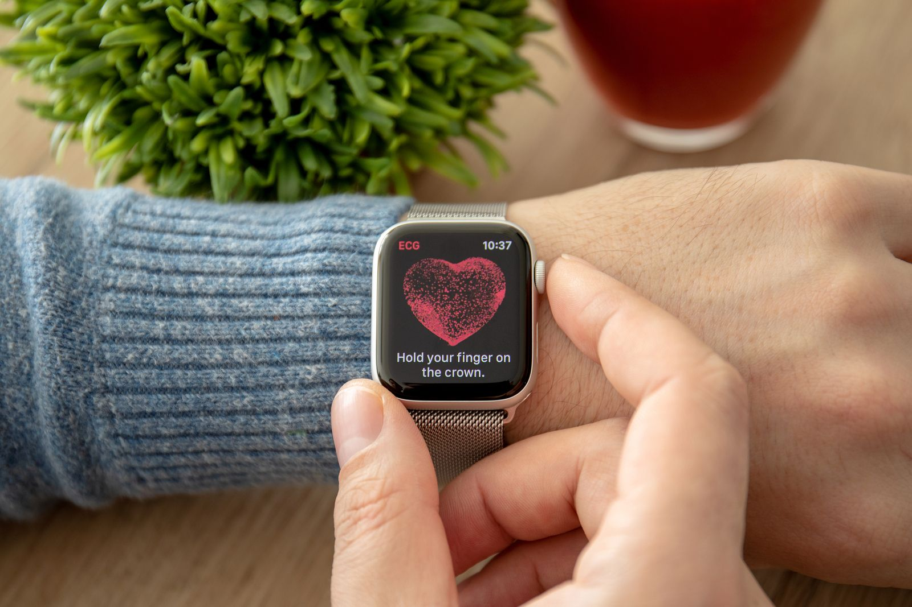

Tendencias de Salud y Bienestar en 2024
En 2024, el enfoque en salud y bienestar ha tomado nuevas direcciones, con una creciente popularidad de prácticas de autocuidado y tecnología portátil de monitoreo de salud.
El mercado de dispositivos wearables, como relojes inteligentes y anillos de actividad, está en auge, permitiendo a los usuarios controlar sus signos vitales y recibir alertas sobre su estado de salud en tiempo real.
Otro aspecto relevante ha sido el auge de la nutrición personalizada. Con el análisis de ADN y microbioma, ahora es posible adaptar planes de alimentación a las necesidades específicas de cada individuo, potenciando resultados de salud.
Estas innovaciones están ayudando a más personas a tomar decisiones informadas y proactivas sobre su bienestar.
Comentarios
Agregar un comentario